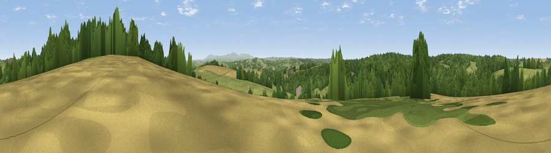

Viewpoint near Sheepwash
#31528 in England · top 66% of its area beats it · near SheepwashThe view, rendered

A 360° render of this exact spot computed from the terrain model, tree cover and land cover — summer colours, afternoon light, calibrated against photographs of famous viewpoints. Real trees, hedges and buildings will differ in detail.
The panorama
Grey silhouette: terrain skyline in each direction (720 bearings, Earth curvature and refraction included). Dashed green: skyline with trees (+15 m) and buildings (+8 m) as obstacles. Blue strip: how far the ground is visible on each bearing.
Where the view opens
Wedge length = distance to the farthest visible ground on that bearing (vegetation-aware). Rings at 10, 25 and 50 km.
What fills the view
47% woodland · 44% grassland · 9% cropland ·
Angular shares of the visible panorama (visual magnitude), not map area. Landscape diversity 0.42 (0–1 Shannon).
Key numbers
More beautiful places nearby
The staircase of upgrades: each row has a higher view potential than everything closer. Driving times are estimates from straight-line distance, calibrated against real road routing — check an actual route before setting out.
| Place | Direction | Drive | Score |
|---|---|---|---|
| Viewpoint near Petrockstowe | E · 1 km | ~3 min | 59.2 |
| Viewpoint near Petrockstowe | E · 1 km | ~4 min | 65.5 |
| Viewpoint near High Bullen | NNE · 13 km | ~24 min | 71.2 |
| Viewpoint near Bideford | N · 16 km | ~29 min | 73.5 |
| Viewpoint near Parkham | NNW · 18 km | ~31 min | 81.7 |
| Viewpoint near Bucks Mills | NW · 18 km | ~31 min | 84.0 |
| Viewpoint near Woolacombe | N · 33 km | ~51 min | 84.7 |
| Viewpoint near Crackington Haven | WSW · 38 km | ~57 min | 88.1 |
50.85978, -4.16215 · source: screening · position refined by local search. Computed location — check access rights before visiting.